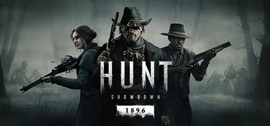

Crytek 的第一人称 PvPvE 撤离恐怖射击。19世纪末美国南方湿地，赏金猎人对抗克苏鲁腐化怪物。永久死亡、CryEngine 大气感、紧张的Bounty争夺撤离博弈。2024年8月升级为 1896 版本。
想象一片你只在恐怖小说里读到过的世界——1896 年的路易斯安那 Bayou，雾气贴着水面，煤气灯只能照亮三米；夕阳把整片沼泽染成血色，远处的瘟疫村传来留声机的女声哭腔。神秘的「黑暗腐化」从地下涌出，把人和动物拧成怪物。这里没有警长，没有军队，只有组织 Hunt 雇来的亡命猎人——你这种人。1896 升级又把世界扩到了科罗拉多的废弃矿镇Mammon's Gulch，雪线下的木屋里，腐化已经蔓延了五年。
你扮演的是组织 Hunt 旗下的赏金猎人——一个连真名都被组织抹掉的人。可你不是被剧情牵着走的英雄。你面前是一张被诅咒的湿地地图，一把1873 年款温彻斯特，一个十字弓，和两个跟你一样亡命的队友。你已经在这名猎人身上投入了50 小时——他的等级、装备、专属技能、甚至那把绑着红绳的左轮都是你一局一局攒下来的。可在这片沼泽里，一颗子弹就能让这一切归零。
替你掩护过 Boss 战的队友，下一局就在另一个房间举枪等你；那把陪你打了 30 场的温彻斯特，会因为你在撤离前 20 米中弹彻底归零；头顶留声机里那首走调的女声，是哀歌，也是暴露你位置的诱饵。每一发子弹都在问你同一个问题：你是为了赏金而来，还是为了不让自己消失而来？组织还会记得你的名字，但这名猎人——他还能撑过下一颗子弹吗……？
美国西部 × 克苏鲁哥特，是把19 世纪末南方湿地的潮湿衰败与洛夫克拉夫特式神秘恐怖熔在同一帧画面里。底色是熟悉的西部赏金题材——破旧木屋、煤气灯、左轮与温彻斯特；变异在于把腐化怪物、留声机哀歌、瘟疫教派塞进每一片沼泽。色彩 DNA 锁定沼泽暖橙 + 暗夜墨蓝双色调，再用煤气灯黄与雾气灰作高光与低光过渡，构成猎杀辨识度最高的招牌色。
南方哥特与西部恐怖的视觉共识跨越了一个多世纪。1920 年代洛夫克拉夫特小说《克苏鲁的呼唤》定型了「沼泽 + 古老邪神 + 渔村瘟疫」的视觉母题。1948 年福克纳的南方哥特小说为湿地腐败之美奠定文学基调。2004 年 HBO 剧集《Deadwood》把脏乱写实的西部小镇推到电视巅峰。2014 年《True Detective 真探第一季》用路易斯安那湿地把南方哥特拍成了影像范本。同期《Bloodborne》（2015）把哥特恐怖与狩猎仪式合流为游戏视觉范式。猎杀走的是这条线的合流——CryEngine 把湿地的湿气、雾、煤气灯反射渲染到极致，再叠加 19 世纪武器的金属磨损质感。
基于体验清单 · 审美偏好 · IP故事三维度综合选出
点击链接跳转到对应平台查看 · 仅整理外部链接